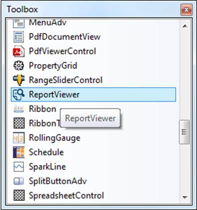
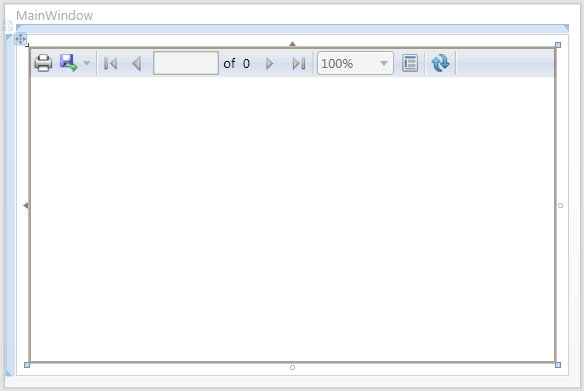
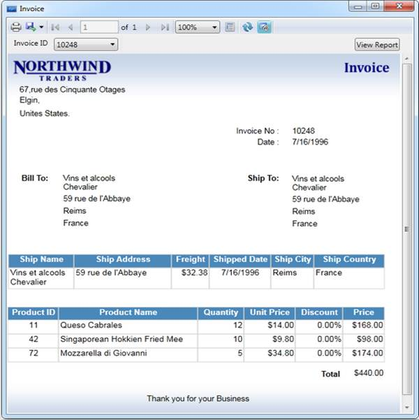
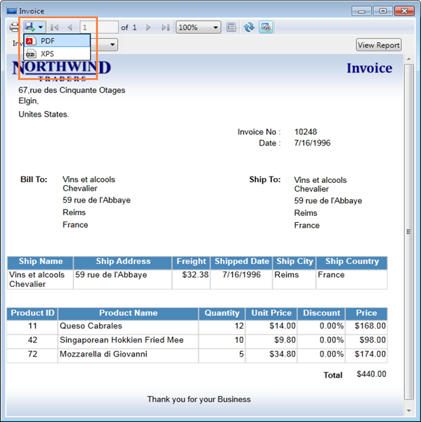
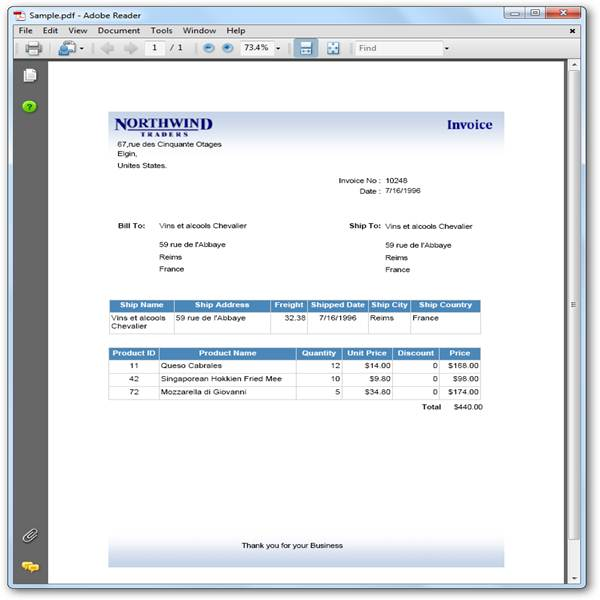

The section illustrates how to add the Report Viewer to the WPF application. It includes the following steps:
1. Create a new WPF application in VS2008 or VS2010.

Figure 8: Toolbox
2. To add the Report Viewer control through designer, drag the Report Viewer control from Toolbox to Report Viewer window. The Report Viewer window will be modified as shown below.

Figure 9: Modified Report Viewer window
 Note: The following code is auto generated in XAML
window.
Note: The following code is auto generated in XAML
window.
|
<Window x:Class="WpfApplication6.Window1" xmlns="http://schemas.microsoft.com/winfx/2006/xaml/presentation" xmlns:x="http://schemas.microsoft.com/winfx/2006/xaml" Title="Window1" Height="371" Width="559" xmlns:syncfusion="http://schemas.syncfusion.com/wpf"> <Grid> <syncfusion:ReportViewer Name="reportViewer1" /> </Grid> </Window> |
3. Set the ReportPath to load the report in Report Viewer from a local machine.
|
<Window x:Class="WpfApplication6.Window1" xmlns="http://schemas.microsoft.com/winfx/2006/xaml/presentation" xmlns:x="http://schemas.microsoft.com/winfx/2006/xaml" Title="Window1" Height="371" Width="559" xmlns:syncfusion="http://schemas.syncfusion.com/wpf"> <Grid> <syncfusion:ReportViewer Name="reportViewer1" ReportPath="D:\ReportTemplate\Invoice.rdl"/> </Grid> </Window> |
4. To render the provided report in Report Viewer, call the RefreshReport method in window or parent control loaded event.
|
this.Loaded += (sender, arg) => { // To Render the Report in ReportViewer. this.reportViewer1.RefreshReport(); }; |
5. Run the application. The following output displays.

Figure 10: ReportViewer sample demo
6. Click export drop-down button in Report Viewer toolbar and select PDF or XPS as needed. The report will be exported into PDF or XPS formats, respectively.

Figure 11: PDF and XPS options in Report Viewer
The following output is the exported PDF report.

Figure 12: Exported PDF Report